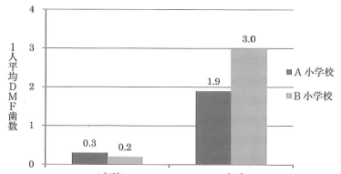

永久歯のう蝕（むし歯）経験を表す指標。
注意：矯正治療や外傷による抜歯はMに含めない。30歳以上ではう蝕以外の原因で抜去した歯をMに含めることがある。
フッ化物応用などの予防処置の効果を評価する指標。
増加DMF = 調査終了時のDMF − 調査開始時のDMF
| 指標 | 対象 | 表記 |
|---|---|---|
| DMF指数 | 永久歯 | 大文字 |
| dmf指数 | 乳歯 | 小文字 |
注意：乳歯のm（missing）は「う蝕による喪失歯」または「う蝕による要抜去歯」を指す。
フッ化物洗口法を実施しているA小学校と実施していないB小学校における1年時と6年時の1人平均DMF歯数を図に示す。
フッ化物洗口法による齲蝕抑制率を求めよ。ただし、小数点以下第1位を四捨五入すること。

【解説】
・A小学校（フッ化物洗口あり）：増加DMF = 1.2 - 0 = 1.2
・B小学校（対照群）：増加DMF = 2.1 - 0 = 2.1
・齲蝕抑制率 = (2.1 - 1.2) / 2.1 × 100 = 0.9 / 2.1 × 100 ≒ 43%
中学校1年生100名の学校歯科健康診断の集計結果を表に示す。DMF歯率を求めよ。
【解説】DMF歯率 = DMF歯の合計 / 被験歯数 × 100
被験歯数 = 100名 × 28歯 = 2800歯として計算。